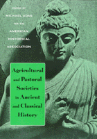

<body bgcolor="#FFFFFF" text="#000000" link="#0000FF" vlink="#CC0000" alink="#CC0000"><center><hr width="350" size="1" align="center" noshade>An in-depth examination of the early history of humankind<hr width="350" size="1" align="center" noshade><p><a href="https://cdcshoppingcart.uchicago.edu/Cart/ChicagoBook.aspx?ISBN=9781566398312&&PRESS=temple" target="_top">Buy this book!</a> | <a href="https://cdcshoppingcart.uchicago.edu/Cart/Cart.aspx?PRESS=temple" target="_top">View Cart</a> | <a href="https://cdcshoppingcart.uchicago.edu/Cart/Cart.aspx?PRESS=temple" target="_top">Check Out</a></p><p></p></center><!--none//--><h1>Agricultural and Pastoral Societies in Ancient and Classical History</h1>
<h3>edited by Michael Adas</h3>
<P>cloth 1-56639-831-2 $90.50, Feb 01, <FONT COLOR=#990033>Available</FONT>
<br>paper 1-56639-832-0 $35.95, Jan 01, <FONT COLOR=#990033>Available</FONT>
<BR> 376 pp
7x10
1&nbsp;halftone
</P><BLOCKQUOTE><I>"Viewed as a whole, this volume forms a major contribution to the current 'global discourse' in historical scholarship."</i>
<br>&#151<b><i>Ancient East & West</i></b><i></I></BLOCKQUOTE>
<p>The second volume in the American Historical Association's series introduces readers to the cross-cultural study of ancient and classical civilizations. The opening essay by Jerry Bentley surveys methodologies and critical interpretations that have been essential to the development of comparative historical analysis. These include contributions from the fields of sociology, archaeology, linguistics, anthropology, and recent investigative practices that honor previously neglected groups and validate testimony passed down through oral traditions. The first set of essays highlight predominant themes in global history by examining the ongoing interactions between ancient agrarian and nomadic societies as well as the impact of these exchanges on economic development and cross-cultural adaptation. The essays in the second section focus on regional patterns in the dissemination of ideas, institutions, and material culture.
<p>By highlighting key historical transitions and recurring cultural patterns, this book provides an engaging introduction to the complexities of human development. Written by leading scholars in the field, the historiographic essays in <I>Agricultural and Pastoral Societies in Ancient and Classical History</I> offer students and teachers a comprehensive overview of the arguments, applications, and resources that inform comparative global history.
<BR>&nbsp;<h2>Reviews</h2>
<p><i>"...indispensable for the study of world history.... Each of the chapters can be a guiding light for those interested in researching and writing world history."</i>
<br>&#151<b><i>Journal of World History</i></b>
<BR>&nbsp;<h2>Contents</h2><P>
<p>Introduction &#150 Michael Adas
<p><b>Part I: General Themes</b>
<br>1. Shapes of World History in Twentieth-Century Scholarship &#150 Jerry H. Bentley
<br>2. Agricultural Origins in Global Perspective &#150 John Mears
<br>3. Nomads and Sedentary Societies in Eurasia &#150 Peter Golden
<br>4. Women in Ancient Civilizations &#150 Sarah Shaver Hughes and Brady Hughes
<br>5. The Silk Road: Overland Trade and Cultural Interactions in Eurasia &#150 Xinru Liu
<p><b>Part II: Cross-Cultural Themes in Key Global Regions</b>
<br>6. The Peoples and Civilizations of the Americas Before Contact &#150 John E. Kicza
<br>7. Sudanic Civilization &#150 Christopher Ehret
<br>8. The Hellenistic Period in World History &#150 Stanley Burstein
<br>9. Southernization &#150 Lynda Shaffer
<br>10. Finding Buddhists in Global History &#150 Jonathan S. Walters
<p>About the Contributors
</P><BR>&nbsp;<H2>About the Author(s)</H2>
<table><tr><td valign="top"><img src="/tempress/authors/886_au.gif" height="90" width="75"></td><td width="100%" valign="middle"><p><B>Michael Adas</B> is Abraham Voorhees Professor of History at Rutgers University, New Brunswick. He is currently editor of the American Historical Association's series on Global and Comparative History and co-editor of the Cambridge University Press series on "Studies in Comparative World History." He has published numerous articles and books, including most recently (with Peter Stearns and Stuart Schwartz) <I>World Civilization: The Global Experience</I> (1992) and <I>Turbulent Passage: A Global History of the Twentieth Century</I> (1993).</P></td></tr></table>
<BR><H2>Subject Categories</H2>
<p><A HREF="/tempress/history.html" TARGET="_top">History</a>
</p>
<BR><h2 class="inpageheading">In the series</H2>
<P><I><a href="http://www.temple.edu/tempress/critical.html" onMouseOver="window.status='Click for other books in this series!'; return true;" onMouseOut="window.status=''; return true;" target="_top">Critical Perspectives on the Past</a></i>, edited by <a href="http://www.temple.edu/tempress/authors/benson_memoriam.html" target="_top">Susan Porter Benson</a>, Stephen Brier, and Roy Rosenzweig.
</p><p><i>Critical Perspectives on the Past</i>, edited by Susan Porter Benson, Stephen Brier, and Roy Rosenzweig, is concerned with the traditional and nontraditional ways in which historical ideas are formed. In its attentiveness to issues of race, class, and gender and to the role of human agency in shaping events, the series is as critical of traditional historical method as content. Emphasizing that history is itself an interpretation of material events, the series demonstrates that the historian's choices of subject, narrative technique, and documentation are politically as well as intellectually constructed.</p>
<p align="center"><a href="https://cdcshoppingcart.uchicago.edu/Cart/ChicagoBook.aspx?ISBN=9781566398312&&PRESS=temple" target="_top">Buy this book!</a> | <a href="https://cdcshoppingcart.uchicago.edu/Cart/Cart.aspx?PRESS=temple" target="_top">View Cart</a> | <a href="https://cdcshoppingcart.uchicago.edu/Cart/Cart.aspx?PRESS=temple" target="_top">Check Out</a></p><p><font face="Arial" size="1"><a href="copyright.html" onMouseOver="window.status='Web Copyright Policy';return true;" onMouseOut="window.status=''" title="Web Copyright Policy">&copy;</a> 2015 <a href="http://www.temple.edu" target="new" onMouseOver="window.status='Link to Temple University home page';return true;" onMouseOut="window.status=''" title="Link to Temple University home page">Temple University</a>. All Rights Reserved. http://www.temple.edu/tempress/titles/886b_reg.html</font></p>